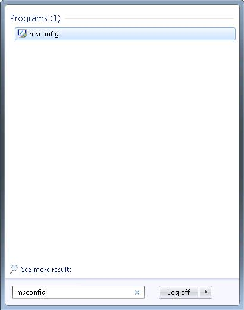
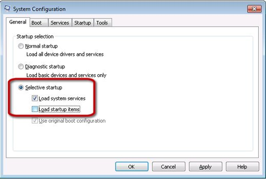
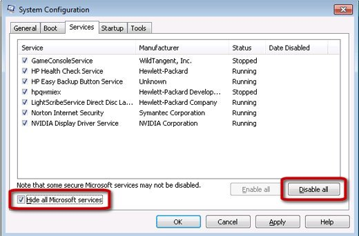
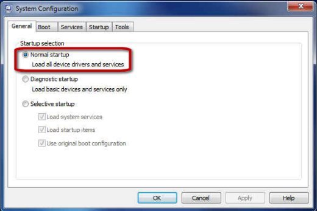
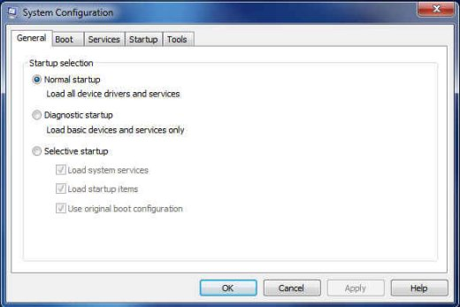
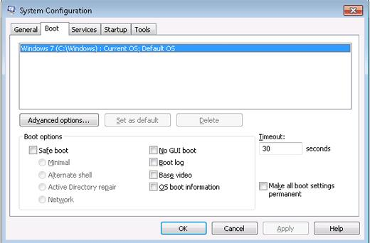
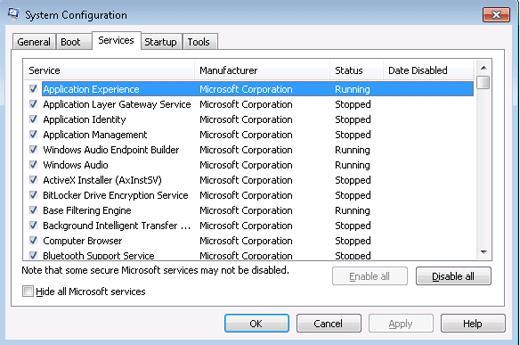
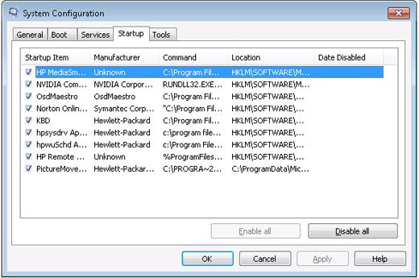

Configuración del sistema operativo
1. Si se le solicita una contraseña de Administrador o una confirmación, escriba la contraseña o dé la confirmación.
Figura: Apertura de la herramienta Configuración del sistema

Aparecerá la herramienta Configuración del sistema.
2. Haga clic en la ficha General.
3. Seleccione Inicio selectivo y desmarque Cargar elementos de inicio.
Figura: Ficha General

4. Haga clic en la ficha Servicios.
5. Seleccione Ocultar todos los servicios de Microsoft, y luego haga clic en el botón Deshabilitar todos.
Figura: Ficha Servicios

6. Haga clic en OK.
7. Reinicie el equipo para que los cambios surtan efecto.
8. Si el problema deja de ocurrir luego de impedir la carga de todo el software, puede usar la ficha Inicio para intentar identificar el software específico que causa el problema. Seleccione todos los títulos de software en la ficha Inicio de Windows excepto uno y reinicie. Continúe haciendo esto, desmarcando software y reiniciando cada vez, hasta que el problema deje de ocurrir. Desinstale el software que causa problemas, o impida que se cargue.
9. Cuando haya terminado de usar la herramienta de Configuración del sistema, ábrala nuevamente y seleccione Inicio normal. Haga clic en OK.
Figura : Inicio Normal de la ficha General

Ficha General
Utilice la ficha General para evitar que se abran aplicaciones específicas con Windows. Las siguientes opciones aparecen en la ficha General:
• Inicio normal: Hace que Windows abra todas las aplicaciones de software que normalmente se abren con Windows.
• Inicio con diagnóstico: Inicia Windows únicamente con servicios y controladores básicos. En este modo, puede determinar si el problema está en un archivo básico de Windows.
• Inicio selectivo: Le permite seleccionar qué programas y servicios desea abrir, y los que desea que no se abran en la ficha Inicio de Windows.
Figura : Ficha General

Ficha Arranque
La ficha Inicio muestra las opciones de configuración incluidas dentro del archivo de información del sistema. A continuación se incluyen algunas opciones de la ficha Inicio.
• Arranque a prueba de errores: Mínimo: Desactiva la conexión en red. Inicia la interfaz de usuario Windows (Explorador) en modo seguro, ejecutando únicamente servicios del sistema esenciales.
• Arranque a prueba de errores: Shell alterno: Desactiva la conexión en red. Inicia el Símbolo del sistema en modo seguro, ejecutando únicamente servicios del sistema esenciales.
• Arranque a prueba de errores: Reparar Active Directory: Similar a un arranque a prueba de errores mínimo, pero con Active Directory habilitado.
• Arranque a prueba de errores: Red: Similar a un arranque a prueba de errores mínimo, pero con la red activada.
• Sin arranque de GUI: La pantalla de Windows está desactivada durante el arranque
• Registro de arranque: Almacena toda la información del proceso de arranque en un archivo.
• Vídeo base: Inicia la interfaz de usuario Windows en modo mínimo VGA.
• Información de arranque del SO: Muestra cada nombre de controlador a medida que cada controlador se carga durante el proceso de arranque.
• Convertir en permanente toda la configuración de arranque: Los cambios efectuados en la configuración del sistema no se controlan. Si desea efectuar cambios posteriormente, lo deberá hacer manualmente. Si esta función está seleccionada, no se podrá seleccionar Inicio normal en la ficha General.
• Campo de tiempo de espera: El uso de Msconfig puede hacer que la pantalla de selección del sistema operativo se muestre durante treinta segundos. Como consecuencia, se agregan treinta segundos al tiempo total de inicio. Para evitar que la pantalla de selección del sistema operativo aparezca durante treinta segundos al inicio, cambie el tiempo de espera a cero.
Figura: Ficha Arranque

Ficha Servicios
La ficha Servicios enumera los programas que se inician con Windows 7 o que se ejecutan periódicamente con Windows. Active o desactive el inicio de los programas marcando o eliminando la marca de la casilla situada junto al nombre del programa.
Figura : Ficha Servicios

Ficha Inicio
La ficha Inicio enumera las aplicaciones de software que se abren automáticamente después de que se abre Windows. También muestra su estado actual (en ejecución o detenido). Desactive las aplicaciones de software individuales eliminando la marca junto al nombre y la ruta.
No desactive los siguientes elementos de inicio, salvo únicamente para propósitos de diagnóstico.
• Panel de control de audio HD
• HP KBD EXE
• digitalización de imágenes de hp - productos Equipo multifunción hp
• HPRun
• hpsysdrv
• HP Total Care Advisor
• Sistema operativo Microsoft Windows
• Productos NVIDIA
• Productos de Symantec Technologies
Figura : Ficha Inicio

La lista siguiente muestra algunos de los tipos de aplicaciones de software que se abren desde la ficha Inicio:
• Software antivirus: Desactive el software antivirus solo para solucionar problemas. Asegúrese de reactivar el software antivirus cuando finalice con la solución de problemas.
• Administradores de teclado: Desactívelos para que el teclado multimedia extendido y la perilla de control del volumen no funcionen.
• Iconos de la bandeja del sistema: Desactívelos para evitar que un ícono de la aplicación de software aparezca en la bandeja del sistema (junto a la hora).